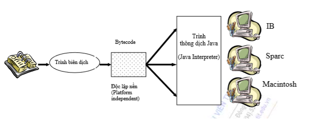

Beginning learning Java
Sau một thời gian làm việc với Java mà chả thấy lên level chút vẹo gì vì thiếu những kiến thức cơ bản, nên tôi quyết định là làm cái này, mục đích để là cải thiện hiểu biết và tăng thêm năng lực trong lĩnh vực lập trình. Tóm lại là bắt đầu ôn lại nào.
Giới thiệu về Java
Trước tiên, để tìm hiểu xem Java nó hoạt động như thế nào, ta cần đi vào những chi tiết.
- Lịch sử
- Những ưu điểm và nhược điểm
- Java hoạt động như thế nào
- Các thành phần và nhiệm vụ của nó trong hệ thống
- Các khái niệm liên quan
Lịch sử ra đời Java
Cái này chả quan tâm là mấy, chỉ nhớ là từ 1990
Những ưu điểm và nhược điểm
Nó là một ngôn ngữ khá đơn giản, gần gũi với C.
- Bỏ đi con trỏ, một trong số những thứ khó chịu nhất của C mà ngày xưa bị gặp
- Không cho phép (đúng hơn thì hạn chế) đa kế thừa, thay vào đó là sử dụng các giao diện (interface)
Nếu như C/ C++ là một ngôn ngữ nửa mùa, thì Java lại hoàn toàn thuần hướng đối tượng.
- Mọi thực thể trong hệ thống đều được coi là một đối tượng, tức là một thể hiện cụ thể của 1 lớp (Class) xác định.
- Tất cả các chương trình đều phải nằm trong 1 class nhất định
- Không thể dùng Java để viết một chức năng/ function/ method mà không thuộc bất cứ một lớp nào. Tức là Java không cho phép định nghĩa dữ liệu và hàm tự do trong chương trinh.
Độc lập với phần cứng và hệ điều hành
- Xem cách hoạt động của Java bên dưới
Java là một ngôn ngữ mạnh mẽ, nhờ vào việc yêu cầu chặt chẽ về kiểu dữ liệu.
- Kiểu dữ liệu phải khai báo tường minh. Tức là mọi dữ liệu đều phải được khai báo trước khi sử dụng.
- Không sử dụng con trỏ và phép toán con trỏ. (mừng gần chết)
- Kiểm tra việc truy cập đến mảng, chuỗi khi thực thi để đảm bảo các truy cập đó không vượt quá giới hạn kích thước của mảng
- Quá trình cấp phát, giải phóng bộ nhớ cho biến được thực hiện tự động, nhờ dịch vụ thu nhặt những đối tượng ko được sử dụng nữa Garbage collection
- Try catch giúp đơn giản hóa quá trình xử lỗi và quản lý phục hồi
Tính an toàn và bảo mật của Java
- Dữ liệu và phương thức được đóng gói bên trong lớp, vì vậy nó chỉ có thể được truy xuất thông qua các giao diện (tức là mấy cái public method đó) mà lớp cung cấp.
- Trình biên dịch (javac) kiểm soát để đảm bảo mã là an toàn, và tuân theo các nguyên tắc của Java. Thử ghi lung tung thiếu dấu ; xem nó có cho compiler ko.
- Trình thông dịch kiểm tra xem bytecode có đảm bảo an toàn trước khi thực thi không.
- Kiểm soát việc nạp các lớp vào bộ nhớ để giám sát việc vi phạm giới hạn truy xuất trước khi nạp vào hệ thống.
Phân tán và đa luồng.
- Java có hỗ trợ phân tán (java.net), nhưng chưa xài bao giờ nên chưa biết.
- Cung cấp multithreading để thực thi công việc đồng thời cũng như đồng bộ giữa các luồng.
Java hoạt động như thế nào
Đối với C, phương pháp biên dịch phụ thuộc vào nền phần cứng. Vì vậy, nếu thay đổi phần cứng, thì đồng nghĩa với việc phải biên dịch lại mã nguồn (Source code).
Đối với Java, cơ chế hoạt động như sau
- Trình biên dịch Javac tiến hành biên dịch Source code thành dạng bytecode.
- Máy ảo Java sử dụng trình thông dịch Java để chuyển mã bytecode thành dạng chạy được tương ứng.
Xem hình minh họa
Các thành phần của Java.
Cái này có lẽ cần 1 section riêng để có thể thu thập đủ thông tin. Chỉ là ôn lại kiến thức nên tạm bỏ qua phần này.
Các khái niệm liên quan
- Object reference (Java - pass by value)
- Mutable Objects & Immutable Objects
- Mutable Objects & Immutable Objects
- Micro service